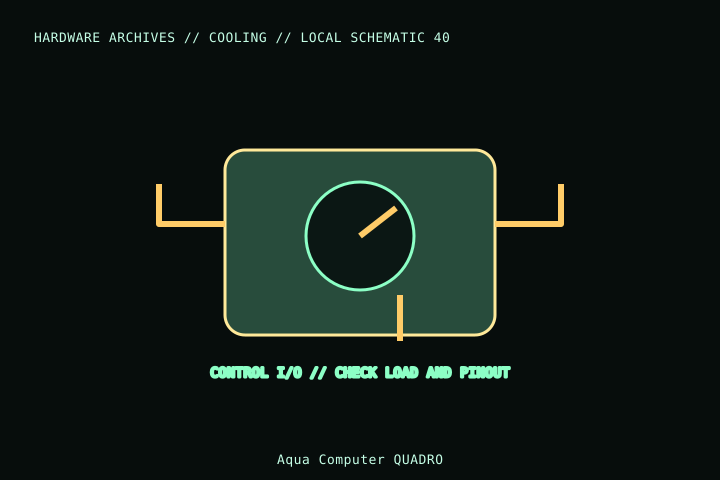

[ INDIVIDUAL COMPONENT // COOLING ]
Aqua Computer QUADRO
A USB-connected, programmable Aqua Computer QUADRO fan controller for up to four PWM outputs and temperature inputs. It is a controller board, not a powered fan hub: check supply, channel current, software, and case mounting requirements.

MODEL IDENTIFICATION: Verify full model, suffix, SKU, generation, connector, and host-support documentation against the physical item. The record describes only the identified model and does not guarantee host compatibility.
Specifications
| Exact identity | Aqua Computer QUADRO fan controller; confirm board revision and included sensor/USB accessories. |
|---|---|
| Fan outputs | Four 4-pin PWM channels; manufacturer rating is up to 25 W per channel (verify the current manual and cooling/aggregate limits). |
| Sensors and interface | Temperature sensor inputs and internal USB connection; aquasuite/software and supported USB header/OS are required for configuration. |
| Power | Requires the documented external supply connection; do not assume motherboard USB powers the attached fans. |
| Fit | Controller board must be mounted with insulation and cable clearance; check dimensions and included accessories against the current revision. |
Compatibility and installation
- Read the exact revision manual for power connector, total output limits, polarity, temperature sensor wiring, and USB pinout.
- Keep each channel and total load within the maker’s stated limits; account for motor startup current and do not treat fan RGB current as PWM output current.
- Configure controller behavior and fail-safe curves in supported software, then verify fan start/tach behavior after reboot.
Service notes
Disconnect its supply and USB lead before changing wiring. Keep the board dry and insulated from the chassis, inspect terminals for looseness, and update/configure software only from official support sources.
Manufacturer references
- Aqua Computer — QUADROManufacturer shop page for QUADRO and product support; verify current revision details.
- Aqua Computer — SupportManufacturer manuals and software.
Model variants and revisions may change specifications or included hardware; the manufacturer’s exact product page/manual and the host manual take precedence.